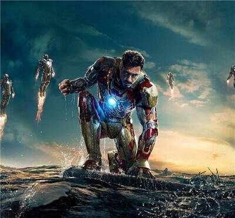

Tony Stark
托尼·史塔克（Tony Stark）即钢铁侠，是美国漫威漫画旗下的超级英雄。
登场动画
- 《无敌钢铁侠》（1966）
- 《钢铁侠》（1994）
- 《无敌钢铁侠》（2007）
- 《钢铁侠：装甲冒险》（2008-2011）
- 《钢铁侠 日版》（2010）
- 《超级英雄联盟复仇者》（2010）
- 《钢铁侠：绝境》（2010）
- 《复仇者集结》（2012）
- 《终极蜘蛛侠》（2012）
- 《钢铁侠：噬甲危机》(2013)
- 《钢铁侠与浩克：联合战记》（2013）
- 《钢铁侠与美国队长：英雄集结》（2014）
登场作品
- 2008年电影《钢铁侠》中，由小罗伯特·唐尼出演。
- 2008年电影《无敌浩克》中，由小罗伯特·唐尼饰演。
- 2010年电影《钢铁侠2》中，由小罗伯特·唐尼出演。
- 2012年电影《复仇者联盟》中，由小罗伯特·唐尼出演。
- 2013年电影《钢铁侠3》中，由小罗伯特·唐尼出演。
- 2014年电影《美国队长2：冬日战士》中，洞察计划中出现了一张托尼·史塔克的照片。
- 2015年电影《复仇者联盟2：奥创纪元》中，由小罗伯特·唐尼出演。
- 2016年电影《美国队长3：内战》中，由小罗伯特·唐尼出演。
- 2017年电影《蜘蛛侠：英雄归来》中，由小罗伯特·唐尼出演。
- 2018年电影《复仇者联盟3：无限战争》中，由小罗伯特·唐尼出演。
- 2019年电影《复仇者联盟4：终局之战》中，由小罗伯特·唐尼出演。
- 2019年电影《蜘蛛侠：英雄远征》中，由小罗伯特·唐尼出演（回忆）。
角色关系
| 敌人 |
出场 |
| 满大人 |
钢铁侠3 |
| 绯红机甲 |
钢铁侠漫画 |
| 鞭索 |
钢铁侠2 |
| 贾斯汀·汉默 |
钢铁侠2 |
| 铁霸王 |
钢铁侠1 |
个人照片

个人生平
托尼·史塔克（小罗伯特·唐尼饰）出生在纽约一个富豪家庭，从小衣来伸手饭来张口的他，并未像所有的纨绔子弟那般只知道享乐胡闹。
父母的不幸去世反而更激发了托尼事业的前进动力。21岁时便开始掌控数百亿财产的他，逐渐确立了史塔克公司作为美军第一军火供应商的雄厚地位。不过托尼傲慢自大的性格以及为达到目的不择手段的做法常常为自己找来很多麻烦。
但不久后的一次绑架事件彻底改变了托尼·史塔克的一生。当托尼带领一班手下和军方观察员在荒无人烟的地方测试自己最新研制的成果时，不料遭遇恐怖分子的袭击。
他在英森帮助下利用恐怖分子为其提供的粗糙设备和原材料，在暗无天日的地下基地里为自己造出了钢铁盔甲，在与恐怖分子的火拼当中，英森博士为史塔克争取时间逃跑不幸身亡，但却使逃脱的托尼改变了自己的以制造军火拯救世界的想法
最后通过钢铁战衣，他化身为了钢铁侠。